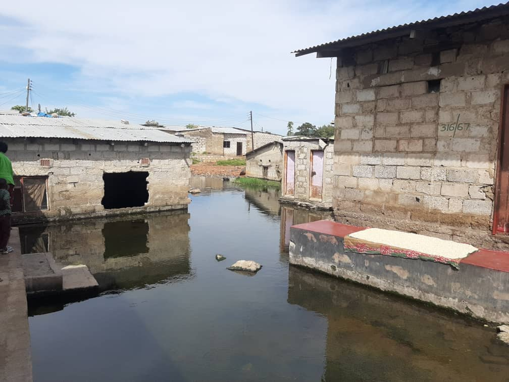
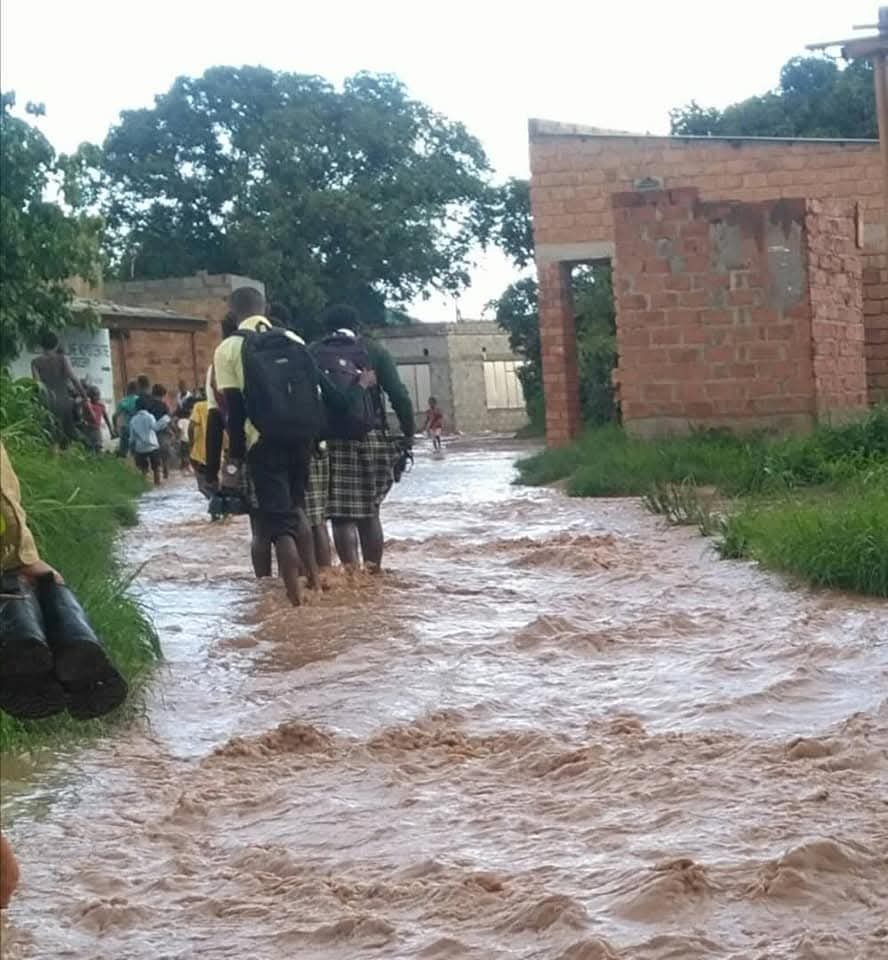
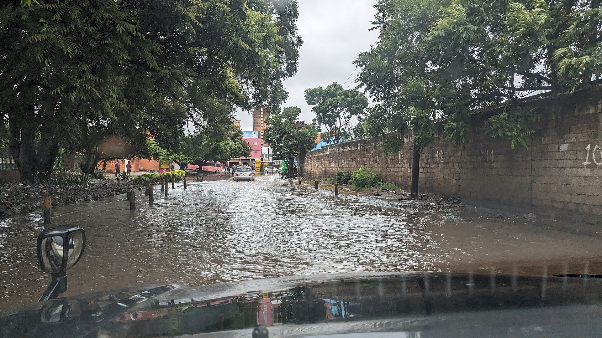

Flooding on the Ground
These real photographs, captured in Lusaka during the January 2024 rains, show what happens when streets lack proper drainage.




Kabanana photos via Makanday (makanday.org) and Kalemba (Kalemba.news, photo by Elijah Mumba); other photos by Icem4k via Wikimedia Commons (CC BY-SA 4.0) — Lusaka, 20 January 2024.